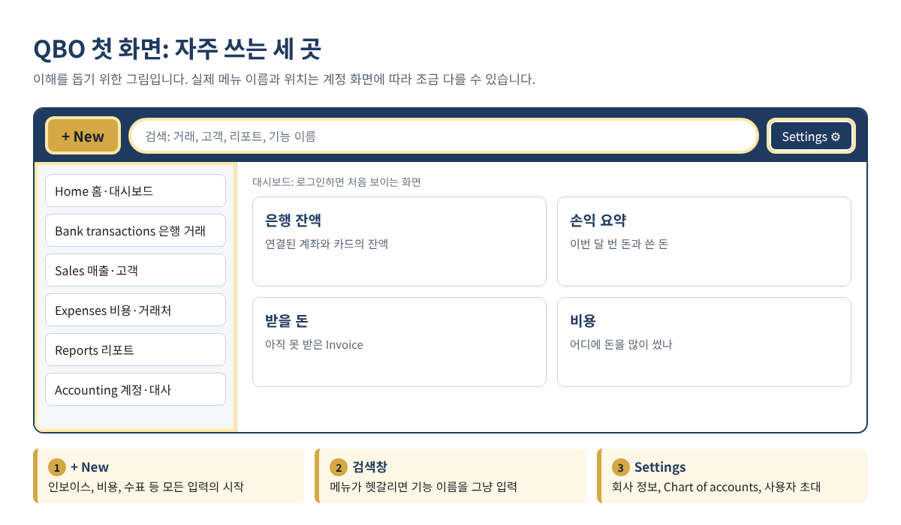
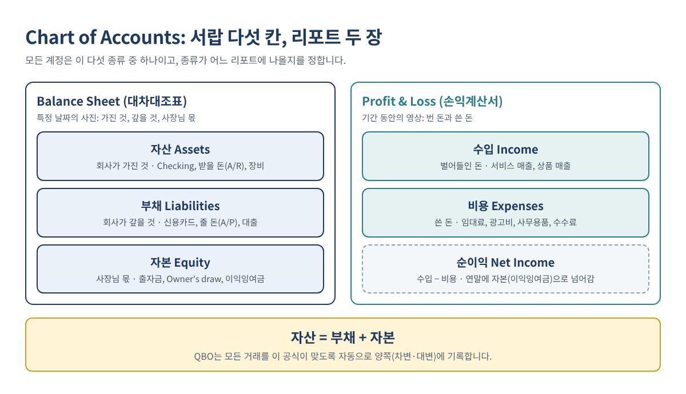
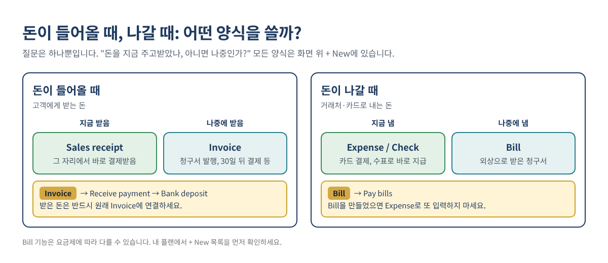
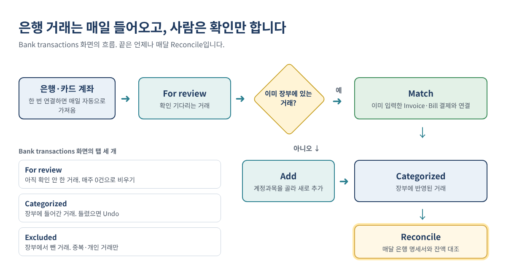

QuickBooks Online 기초 가이드: 처음 시작할 때 꼭 알아야 할 10가지
QuickBooks Online(이하 QBO)을 처음 열면 메뉴와 버튼이 많아 어디서부터 시작해야 할지 막막합니다. 하지만 QBO가 하는 일은 단순합니다. 들어온 돈과 나간 돈을 기록하고, 그 결과를 리포트로 보여 주는 것입니다. 은행과 자동으로 연결되고, 세금 신고에 필요한 숫자를 리포트로 바로 뽑을 수 있다는 점이 수기 장부와 다릅니다.
이 글은 QBO를 처음 쓸 때 알아야 할 기본을 10단계로 정리했습니다. 단계마다 그림이나 표를 넣었고, 끝에는 자주 하는 실수, 자주 묻는 질문, 정기 점검 체크리스트, 셀프 체크 문제를 담았습니다.
이런 분께 필요합니다: QuickBooks Online을 처음 쓰는 미국 소상공인·한인 사업자, QuickBooks Desktop에서 Online으로 옮긴 분, 장부를 회계사에게만 맡겨 와서 기본 구조를 알고 싶은 분.
| 단계 | 내용 | 핵심 |
|---|---|---|
| 1 | QBO와 Desktop의 차이 | 클라우드 장부의 개념, 용어 대응표 |
| 2 | 요금제 선택 | 플랜별 가격·사용자 수·기능 |
| 3 | 처음 설정 5가지 | 거래 입력 전 확인할 항목 |
| 4 | 화면 구조 | + New, 검색창, Settings |
| 5 | Chart of Accounts | 계정 다섯 종류와 리포트의 관계 |
| 6 | 고객·거래처·상품 목록 | 입력을 빠르게 하는 기초 자료 |
| 7 | 수입과 지출 입력 | Invoice, Sales receipt, Expense, Bill |
| 8 | 은행 연결과 거래 분류 | Match, Add, Rule |
| 9 | 월별 Reconcile | 장부 잔액과 은행 잔액 대조 |
| 10 | 3대 리포트 | P&L, Balance Sheet, Cash Flow |
1. QuickBooks Online과 Desktop의 차이
QBO는 Intuit의 클라우드 회계 프로그램입니다. 컴퓨터에 설치하지 않고 웹 브라우저나 휴대폰 앱으로 접속합니다. 데이터가 Intuit 서버에 저장되므로 사무실, 집, 회계사 사무실 어디에서 접속해도 같은 장부를 봅니다.
| 구분 | QuickBooks Online | QuickBooks Desktop |
|---|---|---|
| 설치 | 없음. 브라우저·휴대폰 앱으로 접속 | 컴퓨터에 프로그램 설치 |
| 접속 장소 | 인터넷이 되는 곳 어디서나 | 설치된 컴퓨터 중심 |
| 업데이트 | 자동 적용 | 버전별 업그레이드 |
| 은행 연결 | 매일 자동으로 거래를 가져옴 | 가능하지만 수동 작업이 많음 |
| 회계사와 공유 | 회계사를 사용자로 초대 | 파일을 주고받음 |
| 결제 방식 | 월 구독 | 연 구독 |
| 데이터 백업 | Intuit 서버에 저장 | 사용자가 직접 백업 관리 |
Desktop 사용자를 위한 용어 대응표
같은 작업이라도 메뉴 이름이 다릅니다. Desktop을 쓰던 분은 아래 표로 위치를 찾으면 됩니다.
| Desktop에서 하던 작업 | QBO에서 찾는 곳 |
|---|---|
| Create Invoices | + New → Invoice |
| Enter Sales Receipts | + New → Sales receipt |
| Receive Payments | + New → Receive payment |
| Make Deposits | + New → Bank deposit |
| Enter Bills / Pay Bills | + New → Bill / Pay bills |
| Write Checks | + New → Check |
| Enter Credit Card Charges | + New → Expense |
| Make General Journal Entries | + New → Journal entry |
| Undeposited Funds | Undeposited Funds (일부 화면에서는 Payments to deposit) |
| Reconcile | Settings ⚙ 또는 회계 메뉴 → Reconcile |
Desktop 데이터를 Online으로 옮기는 절차는 QuickBooks Desktop에서 Online으로: 단계별 전환 가이드에 따로 정리했습니다.
팁: 장부의 모든 기능은 결국 "돈이 어디서 들어와 어디로 나갔는가"를 기록하기 위한 것입니다. 낯선 메뉴를 만나면 이 기준으로 생각하면 이해가 빠릅니다.
2. 요금제 선택
혼자 운영하는 사업은 Simple Start, 직원이 있거나 외상 매입(Bill)을 관리해야 하면 Essentials부터 검토하는 것이 일반적입니다. 2026년 8월 가격 인상 이후 미국 정가는 아래와 같습니다.
| 요금제 | 월 정가 | 사용자 | 주요 기능 | 적합한 사업 |
|---|---|---|---|---|
| Simple Start | $38 | 1명 | 인보이스·결제, 은행 자동 연결, 수입·지출 관리, 기본 리포트 | 1인 서비스업 |
| Essentials | $85 | 3명 | Simple Start 기능 + 다중 통화, 직원 근무 시간을 인보이스에 반영 등 | 직원 2~3명, 외상 거래가 있는 사업 |
| Plus | $140 | 5명 | Essentials 기능 + 재고 관리, 프로젝트별 수익, 예산 | 상품 판매, 프로젝트·현장 단위 사업 |
| Advanced | $340 | 25명 | Plus 기능 + 24시간 지원, 사용자 권한 세분화, 일괄 인보이스, 워크플로 자동화 | 규모가 큰 팀 |
출처: NerdWallet, 2026년 10월 19일 업데이트. 가입 전 Intuit 공식 사이트에서 최신 가격을 확인하세요.
신규 가입자는 보통 30일 무료 체험과 첫 몇 달 할인 중 하나를 선택할 수 있습니다. 체험 기간에 실제 거래를 몇 건 입력해 보고 결정하는 것이 좋습니다. 급여(Payroll)는 별도 구독으로 추가하는 경우가 많으므로 직원이 있다면 함께 비용을 확인하세요.
가격 인상 추이
| 인상 시점 | Simple Start | Essentials | Plus | Advanced |
|---|---|---|---|---|
| 2023년 8월 | $30 | $60 | $90 | $200 |
| 2024년 8월 | $35 | $65 | $99 | $235 |
| 2025년 7월 | $38 | $75 | $115 | $275 |
| 2026년 8월 | $38 | $85 | $140 | $340 |
출처: NerdWallet. 구독료는 보통 매년 여름에 오르므로 예산에 반영해 두세요.
팁: 요금제는 나중에 올릴 수 있습니다. 처음에는 필요한 기능만 있는 플랜으로 시작하고, 기능이 부족해질 때 한 단계씩 올리는 편이 비용 면에서 유리합니다.
3. 거래 입력 전에 할 설정 5가지
처음 설정이 잘못되면 1년 내내 리포트가 틀어집니다. 거래를 입력하기 전에 아래 다섯 가지를 확인하세요. 대부분 Settings(톱니바퀴) → Account and settings에 있습니다.
| 항목 | 설정 내용 | 확인 포인트 |
|---|---|---|
| 회사 정보 | 정식 상호, 주소, 이메일, 연락처 | 인보이스에 그대로 표시됨 |
| 회계연도 시작 월 | 대부분 1월 | 세금 신고 연도와 일치해야 함 |
| 회계 방식 | Cash 또는 Accrual | 세금 신고 기준과 맞추기. 불확실하면 회계사와 결정 |
| 은행·카드 연결 | 사업용 계좌·카드만 연결 | 개인 계좌는 연결하지 않음 |
| 사용자 초대 | 직원·회계사를 각자 계정으로 초대 | 비밀번호 공유 금지, 권한은 필요한 만큼만 |
세금 신고가 끝난 기간에는 마감일(Close the books)을 설정해 두면 지난 기간의 거래가 실수로 바뀌는 것을 막을 수 있습니다. 마감일은 같은 Advanced 설정 화면에서 지정합니다.
4. 화면 구조: 자주 쓰는 세 곳
QBO 화면에서 실제로 가장 자주 쓰는 곳은 세 군데입니다. 위쪽의 + New, 가운데의 검색창, 오른쪽 위의 Settings(톱니바퀴)입니다. 왼쪽 메뉴는 은행 거래, 매출, 비용, 리포트 같은 화면으로 이동할 때 씁니다.

| 하려는 일 | 찾는 곳 |
|---|---|
| 인보이스, 비용, 수표 등 새 거래 입력 | 위쪽 + New |
| 은행에서 들어온 거래 확인·분류 | 왼쪽 메뉴 Bank transactions |
| 고객 목록, 미수금 확인 | 왼쪽 메뉴의 매출·고객(Sales) 화면 |
| 거래처 목록, 미지급 Bill 확인 | 왼쪽 메뉴의 비용·거래처(Expenses) 화면 |
| 회사 정보, Chart of accounts, 사용자 관리 | 오른쪽 위 Settings ⚙ |
| 메뉴 위치를 모를 때 | 검색창에 기능 이름 입력 (예: reconcile, journal entry) |
Intuit은 왼쪽 메뉴의 이름과 묶음을 수시로 바꿉니다(Intuit 안내). 메뉴 위치를 외우기보다 검색창에 기능 이름을 입력하는 방법이 오래 유효합니다. 대시보드의 카드(은행 잔액, 손익 요약 등)는 클릭하면 해당 리포트나 화면으로 바로 이동합니다.
5. Chart of Accounts: 계정 다섯 종류
Chart of Accounts(계정과목표)는 모든 거래에 붙이는 분류 목록입니다. 계정은 반드시 다섯 종류 중 하나에 속하고, 종류에 따라 어느 리포트에 나타나는지가 정해집니다. 거래를 입력할 때마다 "이 돈을 어느 계정에 넣을 것인가"를 고르는 것이 장부 작업의 핵심입니다.

| 분류 | 의미 | 계정 예시 | 표시되는 리포트 |
|---|---|---|---|
| 자산 Assets | 회사가 가진 것 | Checking, 미수금(A/R), 장비, 차량 | Balance Sheet |
| 부채 Liabilities | 회사가 갚아야 할 것 | 신용카드, 미지급금(A/P), 대출, 납부할 판매세 | Balance Sheet |
| 자본 Equity | 사업주의 몫 | 출자금, Owner's draw(인출), 이익잉여금 | Balance Sheet |
| 수입 Income | 벌어들인 돈 | 서비스 매출, 상품 매출 | Profit & Loss |
| 비용 Expenses | 사업에 쓴 돈 | 임대료, 광고비, 사무용품, 카드 수수료 | Profit & Loss |
다섯 종류는 항상 다음 관계가 성립합니다. 자산 = 부채 + 자본. 그리고 수입에서 비용을 뺀 순이익은 연말에 자본(이익잉여금)으로 넘어갑니다. QBO는 양식만 고르면 차변·대변을 자동으로 기록하므로 이 관계가 늘 맞게 유지됩니다.
계정 관리 원칙
- QBO는 가입 시 업종에 맞는 기본 계정을 자동으로 만듭니다. 위치는 Settings ⚙ → Chart of accounts입니다.
- 처음에는 기본 계정을 그대로 쓰고, 세금 신고서 항목과 맞춰야 할 때만 계정을 추가합니다.
- 비슷한 계정이 두 개 이상이면 하나로 합치거나(Merge) 사용하지 않는 계정을 비활성화합니다.
- 이미 거래가 있는 계정은 삭제하지 말고 비활성화합니다.
계정 정리 중 Opening Balance Equity 잔액이 보이면 QuickBooks OBE 잔액 정리법을 참고하세요.
6. 고객·거래처·상품 목록
"누구와" "무엇을" 거래했는지 목록을 먼저 만들어 두면 입력이 빨라지고, 고객별·거래처별 리포트도 정확해집니다. 한 번 등록하면 이후에는 이름만 선택하면 됩니다.
| 목록 | 담는 내용 | 예시 | 사용하는 양식 |
|---|---|---|---|
| Customers (고객) | 돈을 받는 상대, 주소·이메일·결제 조건 | Kim Dental, Park Auto | Invoice, Sales receipt, Receive payment |
| Vendors (거래처) | 돈을 내는 상대, 주소·Tax ID 등 | 건물주, 식자재 공급업체, 광고 회사 | Bill, Expense, Check |
| Products and services (상품·서비스) | 판매 항목, 가격, 연결된 수입 계정 | 케이터링 1회 $400, 월 장부 정리 $300 | Invoice, Sales receipt |
상품·서비스를 만들 때 연결할 수입 계정을 함께 지정합니다. 그러면 인보이스를 만들 때마다 계정을 고를 필요가 없고 매출이 자동으로 올바른 계정에 기록됩니다. 1099 대상 거래처라면 거래처 정보에 표시해 두면 연말 1099 작업이 쉬워집니다.
7. 수입과 지출 입력: 지금인가, 나중인가
어떤 양식을 쓸지는 한 가지 기준으로 정해집니다. 돈이 지금 오갔는가, 나중에 오가는가입니다. 모든 양식은 화면 위 + New에 있습니다.

돈이 들어올 때
| 상황 | 양식 | 예시 | 기록되는 내용 |
|---|---|---|---|
| 서비스를 먼저 제공하고 나중에 받음 | Invoice → 받으면 Receive payment | 케이터링 후 30일 뒤 결제 청구 | 미수금(A/R) 증가, 매출 기록 |
| 그 자리에서 바로 받음 | Sales receipt | 매장 카드 결제 | 매출 기록, 바로 입금 또는 입금 대기 |
| 받은 돈을 은행에 함께 입금 | Bank deposit | 수표 3장을 한 번에 입금 | 입금 대기 → 은행 계좌 |
돈이 나갈 때
| 상황 | 양식 | 예시 | 기록되는 내용 |
|---|---|---|---|
| 카드·현금으로 바로 지급 | Expense | 사무용품 카드 구입 | 비용 기록, 카드·현금 계정 감소 |
| 수표로 바로 지급 | Check | 임대료 수표 발행 | 비용 기록, 은행 계좌 감소 |
| 청구서를 받고 나중에 지급 | Bill → 지급 시 Pay bills | 식자재 외상 매입, 월말 일괄 지급 | 미지급금(A/P) 증가 → 지급 시 감소 |
예시: 인보이스 한 건의 흐름 (예시 값)
Kim's Bakery가 11월 3일 회사 행사 케이터링을 하고 $1,200를 30일 뒤에 받기로 한 경우입니다.
| 날짜 | 작업 | 양식 | 장부 변화 |
|---|---|---|---|
| 11월 3일 | 인보이스 발행 (Net 30) | Invoice | 미수금 +$1,200, 매출 +$1,200 |
| 12월 1일 | 고객이 수표로 결제 | Receive payment | 미수금 −$1,200, 입금 대기 +$1,200 |
| 12월 2일 | 은행에 입금 | Bank deposit | 입금 대기 −$1,200, Checking +$1,200 |
| 12월 3일 | 은행 거래가 들어옴 | Bank transactions → Match | 추가 변화 없음 (연결만) |
예시 값입니다. 매출은 인보이스를 발행한 날 한 번만 기록됩니다.
은행 입금을 매출로 다시 입력하면 매출이 두 번 잡힙니다. 인보이스를 발행했다면 돈을 받았을 때 반드시 Receive payment로 그 인보이스를 닫아야 합니다. Bill도 마찬가지로 Pay bills로 지급 처리해야 미지급금이 남지 않습니다.
입금 대기 금액이 쌓여 있다면 Undeposited Funds 정리법을 참고하세요.
8. 은행 연결과 거래 분류
은행과 카드를 연결하면 거래가 매일 자동으로 들어옵니다. 사용자는 들어온 거래를 확인하고 계정을 지정하기만 하면 됩니다.

- 계좌 연결: Bank transactions 화면에서 계좌 연결(Connect account)을 선택하고 은행을 검색해 로그인합니다. 처음 연결할 때 과거 몇 달치 거래를 가져올지 선택할 수 있습니다.
- For review 확인: 새로 들어온 거래가 이 탭에 쌓입니다.
- Match 또는 Add: 이미 입력한 인보이스 결제·Bill 지급과 같은 돈이면 Match, 처음 보는 거래면 계정을 골라 Add(또는 Confirm)합니다.
- Rule 설정: 매달 반복되는 거래(전기 요금, 통신비 등)는 규칙을 만들어 두면 같은 계정으로 자동 분류됩니다.
- 첨부: 영수증 사진을 거래에 첨부해 두면 세무 조사나 회계사 확인 때 근거가 됩니다.
| 탭 | 의미 | 할 일 |
|---|---|---|
| For review | 아직 확인하지 않은 거래 | 매주 0건으로 정리 |
| Categorized | 장부에 반영된 거래 | 잘못 분류했으면 Undo 후 다시 처리 |
| Excluded | 장부에서 제외한 거래 | 중복 거래나 잘못 들어온 개인 거래만 |
팁: 자동 분류와 Rule도 틀릴 수 있습니다. 자동으로 분류된 거래도 For review 단계에서 한 번은 확인하는 것이 안전합니다.
9. 월별 Reconcile: 장부와 은행 잔액 맞추기
Reconcile(은행 대사)은 장부의 잔액이 은행 명세서 잔액과 일치하는지 확인하는 작업입니다. 누락·중복·금액 오류를 찾는 가장 확실한 방법이므로 은행 계좌와 신용카드 모두 매달 진행합니다.
- Settings ⚙ 또는 회계 메뉴에서 Reconcile을 엽니다. 검색창에 reconcile을 입력해도 됩니다.
- 계좌를 선택하고 명세서의 마감일(Ending date)과 마감 잔액(Ending balance)을 그대로 입력합니다.
- 명세서에 있는 거래를 하나씩 체크합니다.
- Difference가 $0.00이 되면 Finish로 완료합니다.
- 차이가 남으면 빠진 거래, 두 번 들어간 거래, 금액이 다른 거래를 찾습니다.
| 차이 금액의 특징 | 의심할 원인 |
|---|---|
| 특정 거래 금액과 같음 | 그 거래가 빠졌거나 두 번 입력됨 |
| 특정 거래 금액의 2배 | 입금·출금 방향이 반대로 입력됨 |
| 9로 나누어 떨어짐 | 숫자 자리 바뀜 (예: 54를 45로 입력) |
| 지난달부터 차이가 있었음 | 이전 Reconcile 완료 후 거래가 수정·삭제됨 |
차이를 찾는 구체적인 방법은 은행 거래 중복·대사 차이, 엑셀로 끝까지 찾는 법에 정리했습니다.
10. 꼭 봐야 할 3대 리포트
리포트는 왼쪽 메뉴의 Reports에서 이름으로 검색해 엽니다. 처음에는 아래 세 가지만 정기적으로 보면 됩니다.
| 리포트 | 한국어 | 보여 주는 것 | 확인할 점 |
|---|---|---|---|
| Profit & Loss (P&L) | 손익계산서 | 기간 동안의 수입 − 비용 | 맨 아래 Net Income이 흑자인지, 비용 항목이 예상과 맞는지 |
| Balance Sheet | 대차대조표 | 특정 날짜의 자산·부채·자본 | 은행 잔액이 실제 통장과 같은지, 미수금·카드 잔액이 맞는지 |
| Statement of Cash Flows | 현금흐름표 | 현금이 실제로 들어오고 나간 경로 | 이익과 현금이 다른 이유 |
P&L 읽기 예시 (예시 값)
| 항목 | 11월 | 설명 |
|---|---|---|
| Income 합계 | $18,500 | 이번 달 매출 |
| Expenses 합계 | $14,200 | 임대료, 재료비, 급여 등 |
| Net Income | $4,300 | 18,500 − 14,200 = 이번 달 순이익 |
예시 값입니다.
이익이 났는데 통장에 현금이 적다면 Cash Flow 리포트를 확인합니다. 받지 못한 인보이스(미수금), 대출 원금 상환, 장비 구입, 사업주 인출은 현금을 줄이지만 이익을 줄이지 않기 때문입니다.
모든 리포트 상단에서 기간(Report period)과 회계 방식(Cash / Accrual)을 바꿀 수 있습니다. 세금 신고 기준과 같은 방식으로 보고 있는지 항상 확인하세요. 자주 보는 리포트는 설정을 바꾼 뒤 저장(Save customization)해 두면 다음부터 바로 열 수 있습니다.
알아 두면 좋은 기능
| 기능 | 용도 | 참고 |
|---|---|---|
| Recurring transactions | 매달 같은 인보이스·Bill·분개를 자동 생성 | 월 관리비, 정기 서비스 요금에 유용 |
| Sales tax | 판매세 계산과 납부 예정액 관리 | 고객 주소 기준으로 계산. 신고·납부 일정은 주마다 다름 |
| Journal entry | 양식으로 처리할 수 없는 조정 분개 | 감가상각, 재분류 등. 회계사와 상의 후 사용 |
| Attachments | 영수증·계약서 파일 보관 | 거래마다 첨부해 두면 증빙 관리가 쉬움 |
| Audit log | 누가 언제 무엇을 바꿨는지 기록 | 여러 사람이 쓰는 장부에서 오류 추적 |
기능 이름과 제공 여부는 요금제와 화면 버전에 따라 다를 수 있습니다.
자주 하는 실수 5가지
| 순위 | 실수 | 문제점 | 해결 방법 |
|---|---|---|---|
| 1 | 개인 돈과 사업 돈을 한 계좌에서 사용 | 분류가 복잡해지고 공제 근거가 약해짐 | 사업 전용 계좌·카드 분리 |
| 2 | 인보이스 결제를 입금 때 매출로 다시 입력 | 매출이 두 번 기록됨 | 은행 거래를 결제에 Match |
| 3 | 거래를 Uncategorized로 방치 | P&L의 신뢰도가 떨어짐 | 매주 For review 정리 |
| 4 | Reconcile을 하지 않음 | 장부 잔액과 실제 잔액이 어긋남 | 매달 명세서로 Reconcile |
| 5 | 사업주 인출을 비용으로 처리 | 이익이 줄어 보이고 세금 계산이 틀어짐 | Owner's draw(자본)로 처리 |
이미 잘못 분류된 거래가 많다면 재분류 분개로 한 번에 정리하는 법을 참고하세요.
자주 묻는 질문
회계 지식이 없어도 QBO를 쓸 수 있나요?
네. 양식을 고르면 QBO가 차변·대변을 자동으로 기록합니다. 다만 5번의 계정 다섯 종류와 7번의 "지금인가, 나중인가" 기준은 이해하고 시작하는 것이 좋습니다.
휴대폰 앱으로도 장부 관리가 되나요?
네. QuickBooks 앱에서 거래 확인, 인보이스 발송, 영수증 사진 업로드를 할 수 있습니다. 영수증은 받은 날 바로 올려 두는 것이 누락을 줄이는 가장 쉬운 방법입니다.
Cash와 Accrual 중 무엇을 선택해야 하나요?
Cash는 돈이 실제로 오간 날을 기준으로, Accrual은 인보이스·Bill 날짜를 기준으로 수입과 비용을 잡습니다. 리포트에서는 언제든 바꿔 볼 수 있지만, 세금 신고에 쓰는 기준은 회계사와 정해 두어야 합니다.
개인 카드로 사업 비용을 냈습니다. 어떻게 입력하나요?
Expense로 입력하고 결제 계정을 자본 계정(예: Owner's investment)으로 지정하는 방법이 일반적입니다. 사업주가 개인 돈을 사업에 넣은 것으로 기록됩니다. 자주 발생한다면 사업용 카드를 따로 쓰는 것이 가장 깔끔합니다.
실수로 입력한 거래는 삭제해도 되나요?
Reconcile이 끝나지 않은 기간의 거래라면 수정하거나 삭제할 수 있습니다. 이미 Reconcile을 마쳤거나 세금 신고가 끝난 기간이라면 다음 Reconcile에 차이가 생기므로 회계사와 상의한 뒤 처리하세요.
정기 점검 체크리스트
- ☐ 매주: Bank transactions의 For review를 0건으로 정리
- ☐ 매주: 영수증 사진을 앱으로 업로드
- ☐ 매주: 받은 돈을 Receive payment로 인보이스에 연결
- ☐ 매달: 은행·카드 계좌 Reconcile, Difference $0.00 확인
- ☐ 매달: A/R Aging 리포트로 연체 인보이스 확인
- ☐ 매달: A/P Aging 리포트로 지급할 Bill 확인
- ☐ 분기마다: P&L과 Balance Sheet 검토
- ☐ 세금 신고 후: 마감일(Close the books) 설정
셀프 체크
- 서비스를 제공하고 30일 뒤에 돈을 받기로 했습니다. 어떤 양식을 쓰나요?
- 사업주가 생활비로 사업 계좌에서 $1,000을 가져갔습니다. 어느 종류의 계정인가요?
- 이번 달 이익이 났는지 보려면 어떤 리포트를 여나요?
- 은행 입금이 이미 입력한 인보이스 결제와 같은 돈입니다. 무엇을 선택하나요?
- 자산 = 부채 + ( ? )
정답: 1. Invoice (돈을 받으면 Receive payment) · 2. 자본(Equity)의 Owner's draw, 비용이 아님 · 3. Profit & Loss · 4. Add가 아니라 Match · 5. 자본(Equity)
이 글은 교육용 정보이며 세무·법률·재정 자문이 아닙니다. QuickBooks Online의 화면, 메뉴 이름, 요금은 수시로 바뀌므로 최신 화면과 Intuit 안내를 확인하시고, 개별 상황은 세무 전문가와 상의하세요.